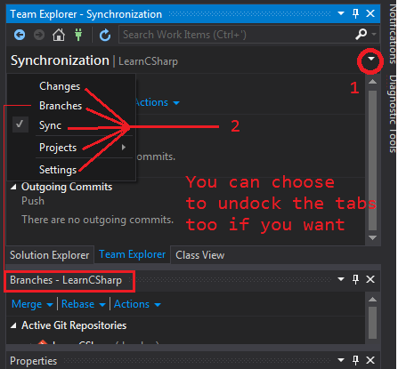

Visual Studio Community 2015 (VS)
Visual Studio 6 is an old IDE we use to maintain the old C++ app such as garage and fence. However, the new VS 2015 that is like 10 versions ahead of 6, this is an IDE we use over MonoDevelop (another IDE for Unity). VS Community Tools 2015 is a free version that comes with unity license. However, you must create a seperate microsoft outlook account in order to use the 2015 version beyond the given 30 days trial.
Tips
- For console app, not to find the main method, F11 to debug and jump to static Main method
- Jump in: F11, over: F10, and out = shf+F11 for debugging.
- In console app development, console output will go to the windows command window and not in the IDE editor
- The window command will and will close too fast to see anything.
- Debug with F11 to stop and start at the main method, and slowly step through to keep the console window open
- there is no console out window inside the editor, but uses the command window as the console window
- F5 to debug
Connecting to GIT
A little tricky in VS 2015, but you want to start with "team" at the top menu and Manage Connections.
Do what you can and get the Branches window to open. > view history on that branch. Then use the Synchronization window, to sync, fetch, pull, commit, and push.
Pushing Commits to server
Make sure to include files that are in the excluded tab to commit the changed files.

Editing gitignore

Visit the respository Settings, click edit on gitignore